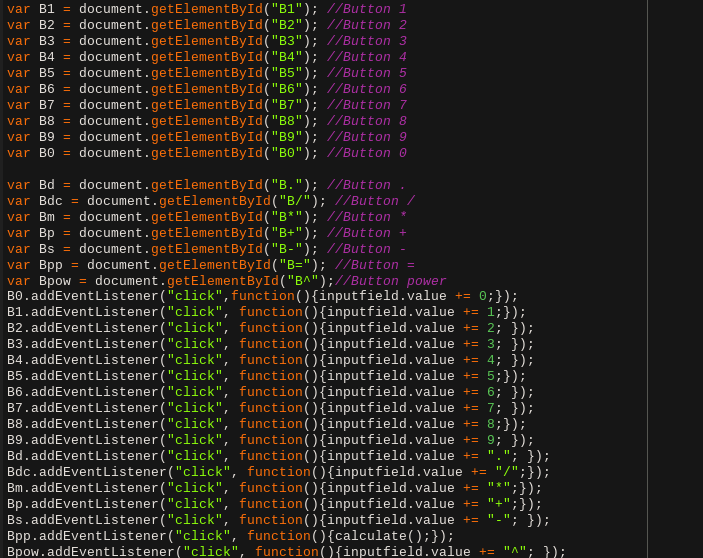

To understand how to make a calculator, we first need to learn a few things about the web. The web consistst of your HTML, CSS, and now JS. A webpage in Javascript terms is called a DOM, or Document Object Model. While in CSS we edit the pagestyle, in JS we can create much crazier things. We can edit anything, like edit HTML css even take inputs and outputs, and then procces the data we can also create button and check for things happening with some big boi code.
The DOM , or rather the manipulation of it allows us to edit and create elemnts on a web page, with user input, actions, or just time. You can manipulate the dom throught Javascript, yet the DOM is HTML based. You have to create elements in html asign them an ID then scan for that ID in you JS. More on that later.
The HTML in this project is simple. I won't provide images for anything I have already wen't over in a diffrent thing. So the html was mostly about 2 things input tags and outputs fields. Now an input field can be done with anything, if you know how to do thoose tricks.
The Calculator Uses 2 field at the top and a table of buttons
<input class="inputs" id="inputs" readonly>
This is how i defined the top field. The class atribute allows me to edit the css of the calculator, centering it and making new fonts and things like that. The id atribute is more specific to JS, but it will also allow me to edit css if need be. The buttons follow the same layout
<button type="button" class="buttons" id="B" >
The ID of the buttons vary. depending on what the button does we assign a new id the name does virtually nothing the type just specifies what the button type is.
This javascript will be split into 4 sections. Inputs, Buttons, and Calculating.
The input is handled in a special way. The field itself is left at read only. In the end you can't add anything in it without code. Here we introduce addEventListener(); functions. Whenever we want to do anything with the DOM, we have to capture it into a variable. There are many methods my personal favorite being
var myVariable = document.getElementById("ElementID");
This myVariable thing now contains an Object, something advanced. This objects has methods or functions, and also has values like value and innerHTML. Let's look at a very big image about parsing.

This image is a function definition. This function takes a veriable called keyElement and will does stuff to it. Let's talk about that. the first thing we see is an if statement with a lot of or statements in it. there are 3 diffrent types of checks 1st one being !isNaN(keyElement.key);. This is a wierd JS method to find if an input is a number or some other wierd integer based thing. The second method is the keyElement.key === "something or other" This is a way to test if the variable keyElement.key is equal to an element. This is usefull for checking for decimals, and sings. The last but not least way of checking is called the keyElement.keyCode === 13 for example. A key that does not have a name like, the enter key which can have 3 names 'return' 'enter' & 'newline'. We use the Code of it being 13. Now this function will does diffrent things based on the inputs. Like if we add a number or one of the special keys for powers, signs. It adds the key pressed into the input field via the inpufield.value += e.key command in english all the means is change yhe property of inputfield value to itself plus the currentElement, there is another case. When we press the enter key we call the calculate(); function. More on that in it's chapter. Now this function takes an input and adds things to it (or remove them if we press the backspace key). This function doesn't actually have a way to check for the input . this is where out next image comes in.

This is fascinating, let's go step by step. The var inputfield = document.getElementById("inputfield"); looks familiar doesn't it that because it's the same code that I described earlier. The next line we add a .addEventListener('keydown' function(e){}); what this does is it adds a way for js to constantly (60 times a second) check if a person hovering over the inputfield element (top bar) typing on the keyboard. After that it will temporarly set the bottom element to the key of it (for fun) and then it will add the put the variable e or the captured key object into the thing. Whenever a key is scanned JS does a lot more than just tell you the key. It stores ALL the info about it. Where is was pressed whattime how long ago from the last press what other keys were held down thehtml page things. In my opinion that's a lot of data. We then hand the key over to the above labeled function that does some magic with it. Making you be able to type into the calculator.
Buttons, why Buttons IDK tbh. I just wanted something clickable in my thing due to the requirements. Well here it is, a clickable button. These buttons are fun. They also have custom ID's per button. A diffrent action of a button assigns it a diffrent ID.

WOW! That's a lot of lines. I think it's best to go step by step. There are 2 sections in this program. the Variable assigment and then the use of them. In the variable assigment we grab the "ID" that we assigned to our element in the html. This way each variable is now correspondant to the button in the web page. In the next phase we have loads of event listeners. Our buttons are labeled, thus allowing us to skip input parsing and just assign an event Listener that will work whenever the button is clicked. Thus we add the coresponding symbol from the button into the value of our inputfield. The purple parts of my code are just comments that help me see which button is which.
The final and the hardest step. Calculation. Due to my time constraints I will be explaining everything as is and not going into too much detail. There are 3 main parts of any function. The call, the function it does. and then finaly the object it return.


There are 2 images here WOW. That's a lot of code.
Ok so function starts Let's go you guessed it step by step.
The first few lines are just variable assignment.
To understand this function we have to explain how it works.
The function takes a input, the calculator field for example.
It makes a for loop and checks certain things.
To allow for multiple inputs we make it easy to reset the function.
We start with 2 numbers. Then we run it through the for loop.
In the for loop, we take an element at a time with the first line, then we run it threw some if statements.
Let me explain how they work. The first if statement checks if our element is a sign